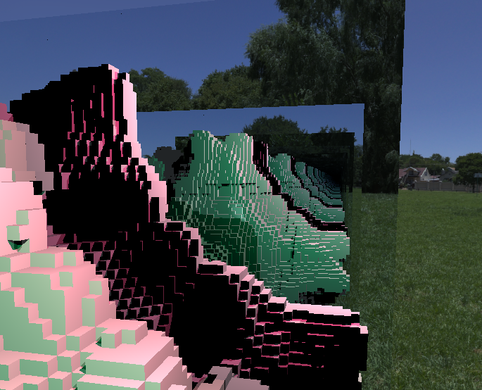
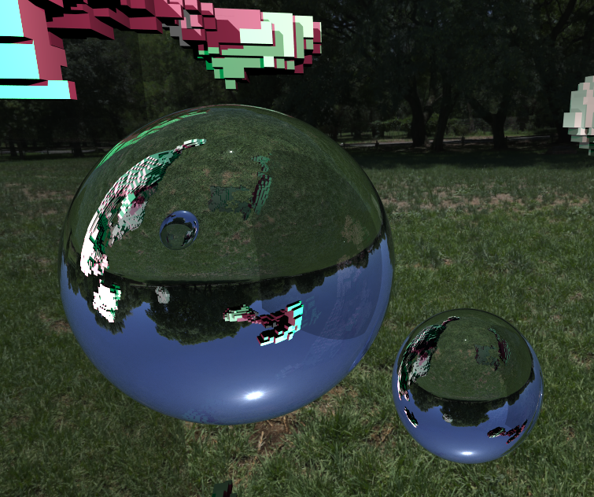
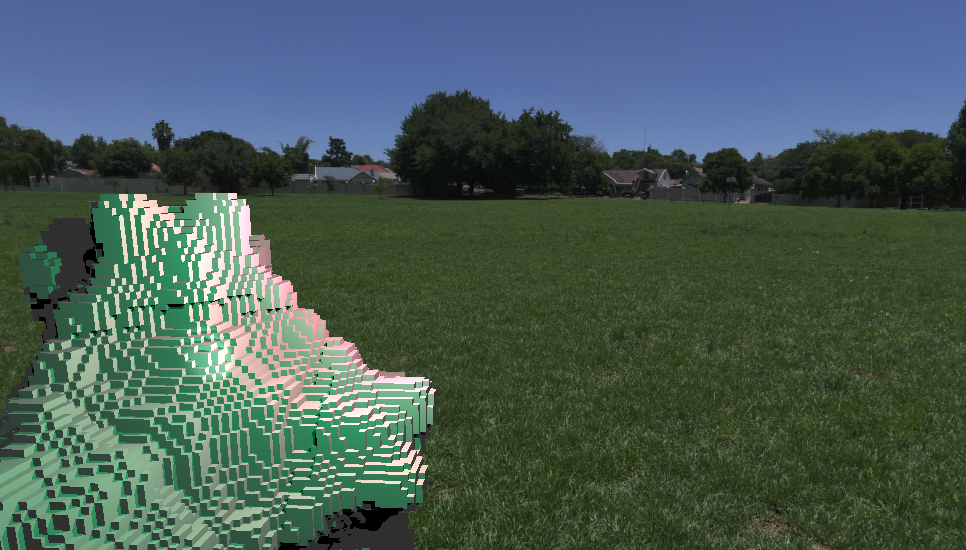

What I built
In my first year at Breda University of Applied Sciences I built a CPU voxel ray tracer in C++. I started from a basic voxel renderer and added these features:
- point lights, spotlights and directional lights with hard shadows
- mirror materials with recursive reflections
- glass with refraction and a Fresnel effect
- an HDR skydome
The world is generated with Perlin noise and rendered with a DDA (Digital Differential Analyzer) grid traversal. Rays are traced recursively to support reflections and refractions.
Technical details
Lighting and shadows
There are three types of lights: point lights, spotlights with adjustable cone size and falloff, and directional lights. All of them cast hard shadows using shadow rays. For each surface point, a ray is traced toward the light to check if anything is in the way.
Materials
The material system supports diffuse surfaces, mirrors with recursive reflections, and glass. Glass uses Snell's law for refraction and Schlick's approximation for the Fresnel effect. A recursion limit stops rays from bouncing forever.


HDR skydome
Rays that don't hit any geometry sample an HDR environment map. This gives the scene a sky and provides ambient lighting for reflective surfaces.

What I learned
This project taught me how recursive ray tracing works, how to calculate lighting and shadows, and how material models like Fresnel and Snell's law work. I also learned to profile and optimize code on the CPU. It was my first real introduction to graphics programming and the math behind rendering.